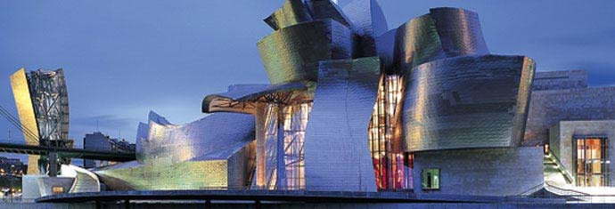

La arquitectura y su simbolismo

09/10/2020
Puede simbolizar la cultura de una sociedad
La arquitectura se define como: “el arte y la técnica de proyectar, diseñar y construir edificios, modificando el hábitat humano y estudiando la estética, el buen uso y la función de los espacios, ya sean arquitectónicos o urbanos”. La arquitectura puede simbolizar a una nación, orgullo, respeto, poder y mucho más.